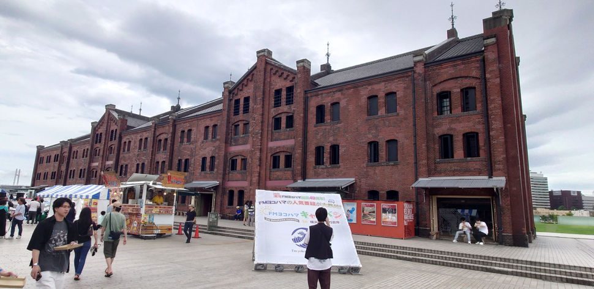
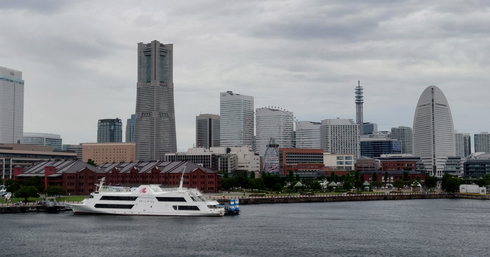

質問1
昔の横浜の観光スポットはどんなところがありましたか？
またその場所にはどんな時に行きましたか？
質問2
今ある観光スポットの中に昔からあるものはありますか？
ある場合は変わった点も教えて下さい。


質問3
昔の横浜の思い出で特に印象に残っている出来事、風景はありますか。


質問4
今の若者にぜひ行ってみてほしいおすすめスポットはありますか？

質問5
これからの横浜にこうなってほしいという願いはありますか？